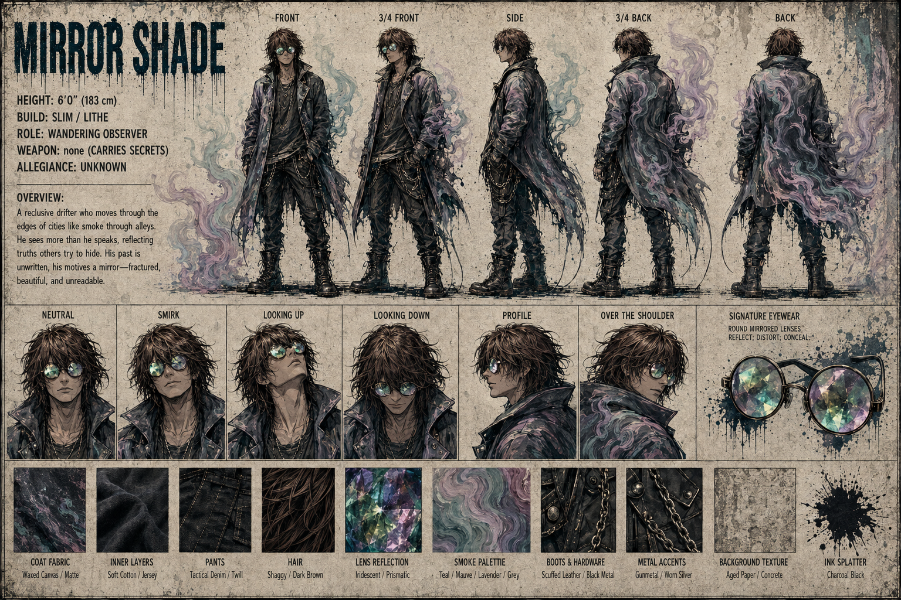

👁️ Sidbin — Mirror Shade


Core Stats
| Attribute | Value |
|---|---|
| Height | 6'0" (183 cm) |
| Build | Slim / Lithe |
| Role | Wandering Observer — Scout / Analyst |
| Weapon | None (Carries Secrets) |
| Allegiance | ⚠️ Unknown |
| Signature Item | Reflective Intel Shard |
Focus
Observation, Secrets, Truth
Overview
A reclusive drifter who moves through the edges of cities like smoke through alleys. He sees more than he speaks, reflecting truths others try to hide. His past is unwritten, his motives a mirror—fractured, beautiful, and unreadable.
Material & Texture Guide
| Material | Description |
|---|---|
| Coat Fabric | Waxed Canvas / Matte |
| Inner Layers | Soft Cotton / Jersey |
| Pants | Tactical Denim / Twill |
| Hair | Shaggy / Dark Brown |
| Lens Reflection | Iridescent / Prismatic |
| Smoke Palette | Teal / Mauve / Lavender / Grey |
| Boots & Hardware | Scuffed Leather / Black Metal |
| Metal Accents | Gunmetal / Worn Silver |
| Background Texture | Aged Paper / Concrete |
| Ink Splatter | Charcoal Black |
Character Reference Sheet Views
- Front, 3/4 Front, Side, 3/4 Back, Back
- Expressions: Neutral, Smirk, Looking Up, Looking Down, Profile, Over the Shoulder
- Signature Eyewear: Round Mirrored Lenses — Reflect: Distort, Conceal
Design Notes
Sidbin is the squad's enigmatic wildcard — the only member whose allegiance is listed as Unknown. A tall, slim figure in a long dark waxed-canvas coat, with round mirrored lenses that reflect, distort, and conceal. He carries an eye-sigil book and is surrounded by swirling purple/teal smoke-like energy. In the campfire scene, he leans forward studying his book, while in the carnival party he appears as a long-haired figure with sunglasses observing from the side. His motives are "a mirror — fractured, beautiful, and unreadable."
The mystery surrounding Sidbin is the squad's biggest narrative hook. Is he truly loyal to Nous Research? Does he serve a different master? Or is he a free agent playing his own long game? His reflective lenses literally mirror the world back — you see yourself in him, but never see him clearly.
Narrative Hooks
- Unknown Allegiance: The only squad member not confirmed as Nous Research
- Carries Secrets: His "weapon" is information itself
- Reflective Intel Shard: A mysterious artifact that shows hidden truths
- Smoke and Mirrors: Literally enveloped in smoke, wearing mirrored lenses — deception is his nature, but whose side is the deception serving?